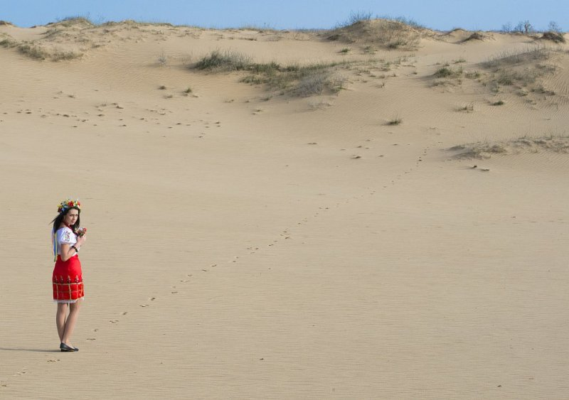
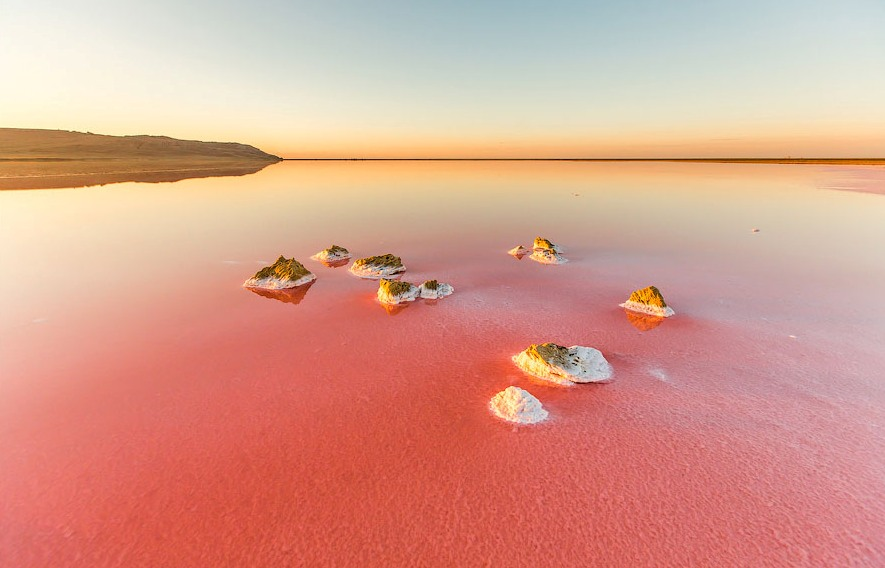
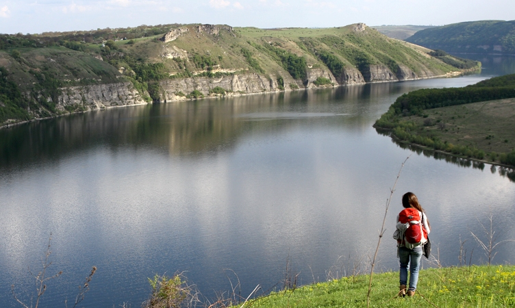
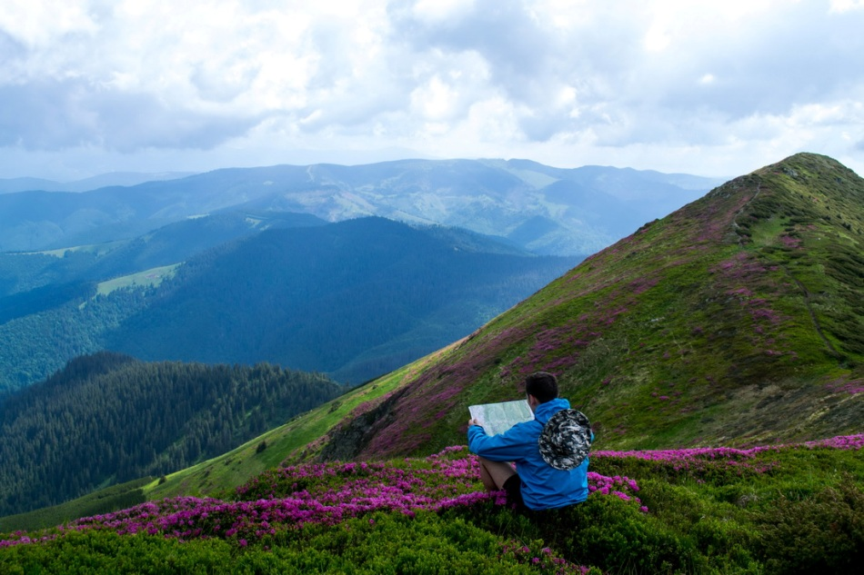
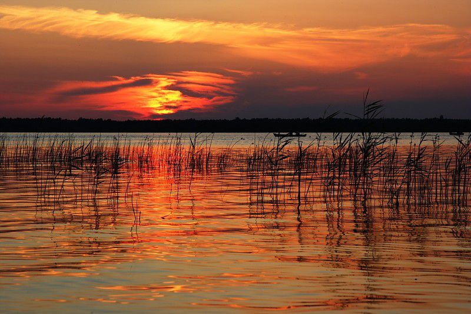
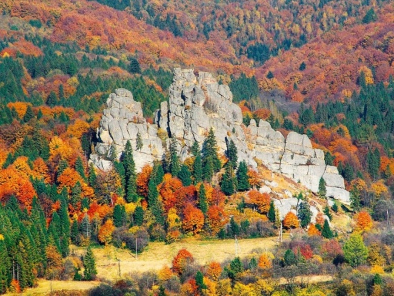
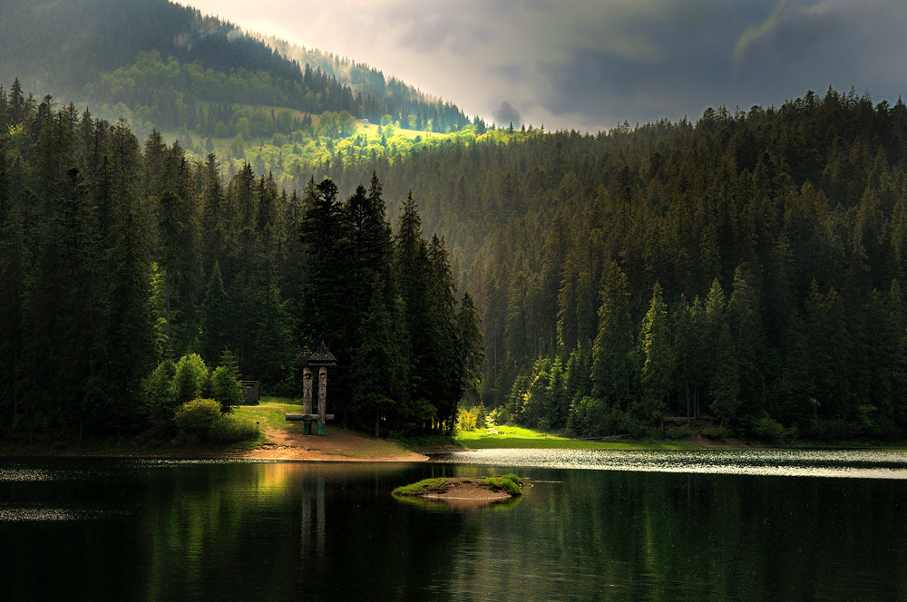
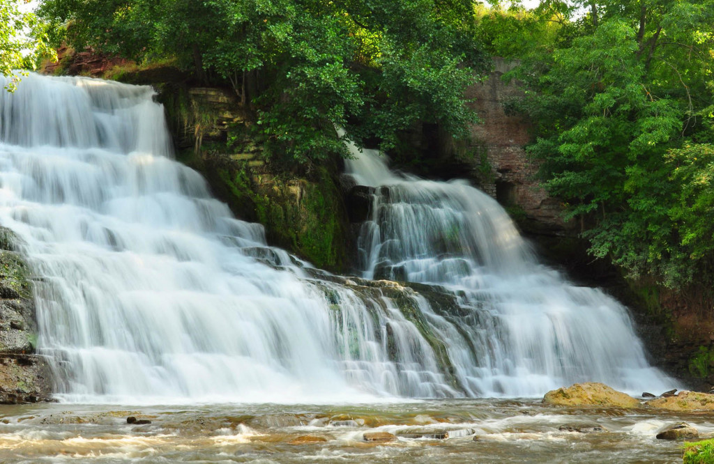

Топ-10 найпрекрасніших природних творінь України
Українські пейзажі захоплюють та закохують в себе, надихають, сповнюючи життєвих сил. Дивовижно але мандруючи Україною можна побачити та насолодитися не просто не схожими ай насправді унікальними та не схожими ні ніякі інші місцини. Пропонуємо сьогодні насолодитися найцікавішими творіннями природи на території України.
Олешківські піски
Неподалік від Херсона, біля чорноморського узбережжя розкинувся один з найбільших піщаних масивів Європи. Олешківські піски часто називають української Сахарою.
Кояське озеро
Одне з найцікавіших місць в Криму є солоне Кояське озеро. Цікаве воно тим що його води мають рожево-червонуватий колір. Такого забарвлення озеру надає наявність мікроскопічних рухливих водоростей «дюналіелла».
Дністровський каньйон
Дивовижна місцина з яскравими та соковитими пейзажами утворюється річкою Дністер між гирлами річок Золота Липа та Збруч. Це найбільший каньйон на території України і займає він територію у 250 км.
Найбільший гірський масив українських Карпат – Чорногора
Для тих хто полюбляє безкраї простори гір та красу карпатської природи гірський масив Чорногора приберіг багато цікавинок.
Шацькі озера
Волинська природа не просто заворожує своєю красою, а й допомагає оздоровитися. Загалом у межиріччі річок Прип’ять та Західний Буг налічується 30 водойм що і мають назву Шацькі озера.
Урицькі скелі
Полюбляєте гарні краєвиди, цікаві історії та історичні пам’ятки, тоді обов’язково відвідайте Урицькі скелі.
Озеро Синевир
Озеро Синевир – найбільше природне озеро на території України. Неймовірні види та чиста вода нічим не відрізняються від славнозвісних альпійських.
Водоспади Буковини
Окрім своєї гостинності та колоритності Буковина вабить мандрівників та туристів своїми природними видами та водоспадами. 7 надзвичайно прекрасних водоспадів створюють унікальні види та захоплюють своєю несхожістю один на один.
